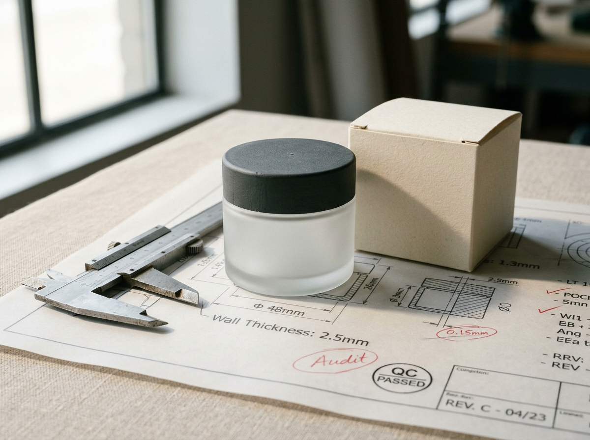

From AI-powered trademark similarity search and Nice class matching to 24/7 DJKI brand monitoring, BRANDCONNECT helps you secure your brand with greater clarity.
Cek potensi lolos merek dengan AI, cari kelas merek (1–45), pantau peniruan di DJKI, hingga layanan pendukung pendirian PT/CV, NIB OSS, BPOM, dan Halal.
Akses langsung fitur pengecekan AI, pencarian kelas merek, monitoring peniruan, atau gunakan AI Trademark Assistant untuk memetakan strategi perlindungan brand Anda.
Perlindungan merek di DJKI berlaku spesifik berdasarkan kelas barang (Kelas 1–34) dan kelas jasa (Kelas 35–45). Cari produk atau bisnis Anda di bawah ini untuk menemukan kelas yang tepat.
🔍
KELAS 03BARANG
Kosmetik, Skincare & Pembersih
Sediaan kosmetik non-medis, perawatan kulit (skincare), serum wajah, sabun mandi, shampo, parfum, minyak esensial, dan pasta gigi.
Contoh: Sunscreen, Lipstik, Facial Wash, Parfum, Body Lotion.
KELAS 05BARANG
Farmasi, Herbal & Suplemen
Sediaan farmasi, obat tradisional/jamu, vitamin, suplemen kesehatan, makanan bayi, serta plester dan bahan pembalut medis.
Contoh: Kapsul Herbal, Vitamin, Suplemen Kolagen, Minyak Kayu Putih.
KELAS 09BARANG
Aplikasi Mobile, Software & Alat Digital
Perangkat lunak komputer dan aplikasi mobile yang dapat diunduh (downloadable), perangkat keras komputer, kacamata, dan instrumen elektronik.
DJKI memberikan masa publikasi dan sanggahan (oposisi) hanya selama 2 bulan pada Berita Resmi Merek (BRM). Sistem Monitoring BRANDCONNECT memindai ribuan permohonan merek baru secara otomatis dan memberi peringatan dini jika ada pihak yang mendaftarkan nama atau logo mirip brand Anda.
BRAND ANDA // PROTECTED
[RADAR AKTIF]: Memantau publikasi Berita Resmi Merek DJKI secara berkelanjutan.
01 // BRM SURVEILLANCE
Pemindaian Berita Resmi DJKI
Memantau seluruh pengumuman permohonan merek baru yang dipublikasikan oleh DJKI setiap minggunya.
02 // PHONETIC & VISUAL AI
Deteksi Kemiripan Pintar
Mengidentifikasi kemiripan bunyi pengucapan, penulisan ejaan, maupun irisan kelas barang dan jasa yang berbenturan.
03 // EARLY WARNING ALERT
Notifikasi Peringatan Dini
Mengirimkan laporan deteksi langsung ke WhatsApp & Email Anda lengkap dengan tingkat risiko konflik merek.
04 // LEGAL OPPOSITION
Tindakan Oposisi Resmi
Tim konsultan HAKI kami siap menyusun dan mengajukan surat keberatan (oposisi) resmi ke DJKI untuk menggugurkan merek peniru.
03
03 / TRADEMARK PROTECTION
OFFICIAL DJKI REGISTRATION & IP
WHAT YOU BUILD
DESERVES Protection.
Setelah potensi merek dianalisis melalui AI, langkah krusial berikutnya adalah mengamankan hak eksklusifnya secara sah di Direktorat Jenderal Kekayaan Intelektual (DJKI) sebelum digunakan atau diklaim pihak lain.
AI TRADEMARK ASSISTANT // INTERACTIVE BRAND & LEGAL DIAGNOSTICREADY TO START
04 / AI TRADEMARK ASSISTANT
NOT SURE WHERE
TO Start?
Gunakan AI Trademark Assistant untuk memetakan kebutuhan perlindungan merek, kesiapan kelas Nice Classification, serta dokumen legalitas pendukung bisnis dan produk Anda dalam 60 detik.
5 LANGKAH DIAGNOSIS PINTAREST. 60 DETIK
01 Fokus utama yang sedang Anda bangun (Brand / Bisnis / Produk)
02 Status kesiapan merek & operasional saat ini
03 Dokumen legalitas & HAKI yang sudah Anda miliki
COMPLETE LEGAL & COMPLIANCE Support FOR YOUR BRAND.
Selain perlindungan merek dan HAKI, BRANDCONNECT menyediakan layanan pendukung terintegrasi untuk mendirikan badan usaha, mengurus perizinan OSS, serta menyiapkan izin edar BPOM dan sertifikasi Halal produk Anda.
Kami menggabungkan kecepatan teknologi pengecekan AI dengan ketajaman analisis konsultan HAKI dan praktisi legalitas bisnis—bukan sekadar aplikasi mandiri yang membiarkan Anda bingung membaca hasil.
0101 — AI-DRIVEN CLARITY
PRECISE RISK DETECTION
Deteksi potensi penolakan merek sejak hari pertama. Algoritma kami mengevaluasi kemiripan fonetik, ejaan visual, dan kepatuhan Pasal 20 & 21 UU Merek sebelum Anda mengeluarkan biaya pendaftaran.
0202 — CONNECTED LEGALITY
END-TO-END ECOSYSTEM
Perlindungan merek tidak berdiri sendiri. Kami menyelaraskan kelas merek Anda dengan kode KBLI badan usaha PT/CV, perizinan OSS, hingga syarat mutlak pengajuan izin edar BPOM dan Halal.
0303 — CONTINUOUS GUARD
ACTIVE BRAND MONITORING
Perlindungan berlanjut bahkan setelah sertifikat merek terbit. Radar BRM kami memantau permohonan merek baru secara berkala agar tidak ada pihak ketiga yang mendompleng reputasi brand Anda.
THE BRANDCONNECT WORKFLOW
FROM TRADEMARK CHECK
TO CERTIFIED Asset.
Proses perlindungan merek dan legalitas di BRANDCONNECT dirancang sistematis dalam empat tahapan yang transparan dan terukur.
CATATAN PROSES // HAKIFIRST-TO-FILE PRINCIPLE
Di Indonesia berlaku asas First-to-File: pihak yang mengajukan pendaftaran lebih dulu dengan kelas yang tepat berhak atas perlindungan hukum.
STEP 01
AI SEARCH & CLASS MAPPING.
INPUT // AI ANALYSIS
Cek tingkat kemiripan nama brand Anda dan tentukan kelas barang/jasa (Nice Classification) yang melindungi kegiatan bisnis Anda secara menyeluruh.
STEP 02
EXPERT LEGAL VERIFICATION.
DIAGNOSIS // STRATEGY
Tim konsultan HAKI kami memvalidasi hasil pengecekan, memberikan saran penguatan daya pembeda etiket merek, dan menyiapkan berkas persyaratan.
STEP 03
OFFICIAL DJKI FILING & LEGALITY.
EXECUTION // REGISTRATION
Pendaftaran merek diajukan secara resmi ke DJKI hingga Bukti Permohonan terbit, diiringi pengurusan PT/CV, NIB, atau BPOM jika Anda membutuhkannya.
STEP 04
CONTINUOUS BRAND MONITORING.
OUTCOME // PROTECTED ®
Merek Anda terus dipantau pada Berita Resmi Merek DJKI hingga sertifikat resmi terbit dan sepanjang masa perlindungan 10 tahun.
BRANDCONNECT INSIGHTS
KNOW BETTER.
PROTECT Better.
Panduan praktis bagi pemilik brand dan pengusaha untuk memahami strategi pendaftaran merek, pemilihan kelas HAKI, pendirian usaha, serta kepatuhan produk.
01 // PERLINDUNGAN MEREK
ISSUE NO. 19·6 MENIT BACA
Before Registering Your Trademark, Understand These Things.
Mengapa pengecekan kemiripan fonetik dan pemilihan kelas merek (Nice Class) sangat menentukan keberhasilan pendaftaran merek Anda di DJKI.
BACA PANDUAN→
02 // FONDASI & BADAN USAHA
ISSUE NO. 14·5 MENIT BACA
What Does a New Business Actually Need to Start Legally?
Memahami urutan yang tepat antara pemilihan bentuk badan usaha (PT atau CV), penentuan KBLI, dan kepemilikan merek terdaftar atas nama perusahaan.
BACA PANDUAN→

03 // REGISTRASI PRODUK & BPOM
ISSUE NO. 23·7 MENIT BACA
From Product Idea to Market: What Should You Prepare?
Mengapa bukti pendaftaran merek di DJKI menjadi syarat utama sebelum mengajukan izin edar BPOM dan sertifikasi Halal untuk produk Anda.
BACA PANDUAN→
PROTECT YOUR BRAND IDENTITY TODAY.
READY TO SECURE
YOUR Brand?
Jangan tunggu hingga nama brand yang Anda bangun digunakan pihak lain. Cek potensi merek Anda sekarang atau diskusikan kebutuhan HAKI dan legalitas bisnis Anda bersama BRANDCONNECT.